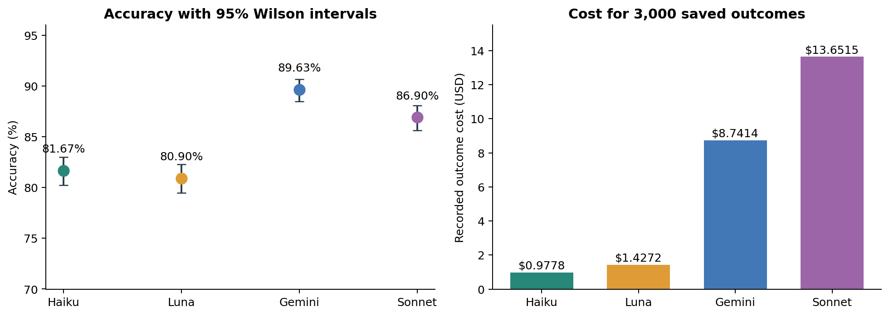
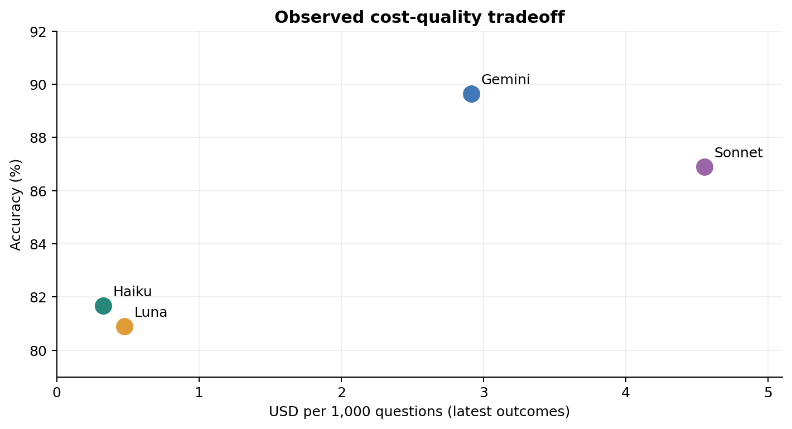
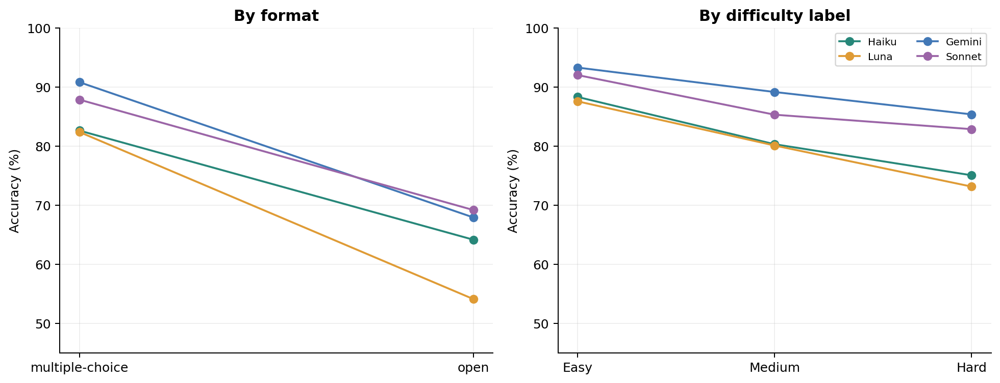
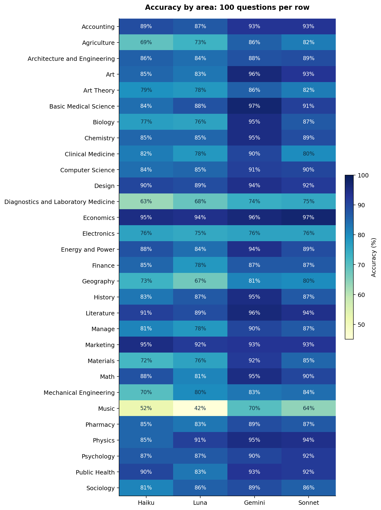
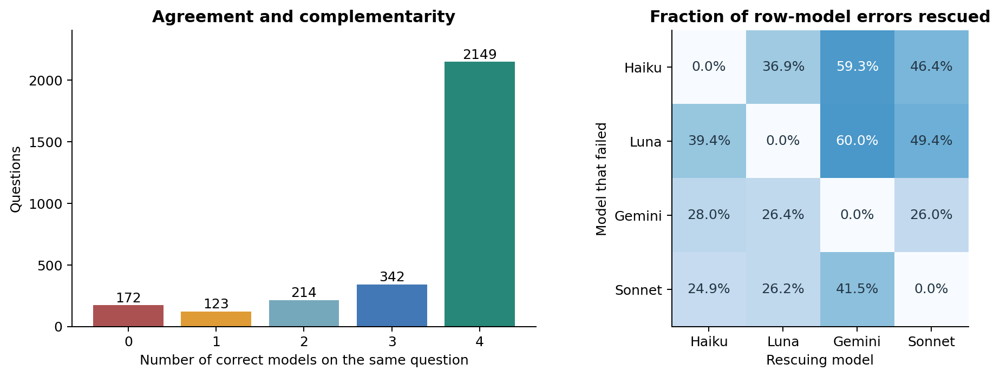
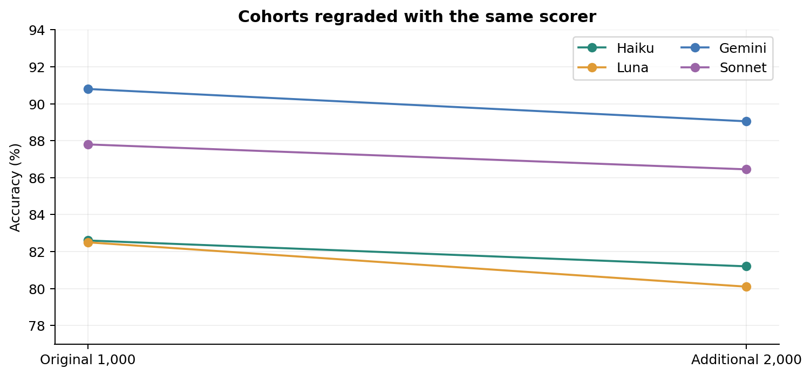
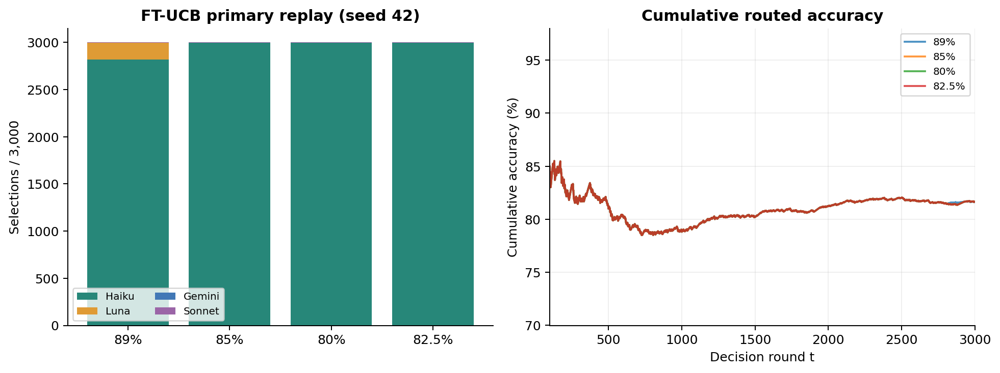
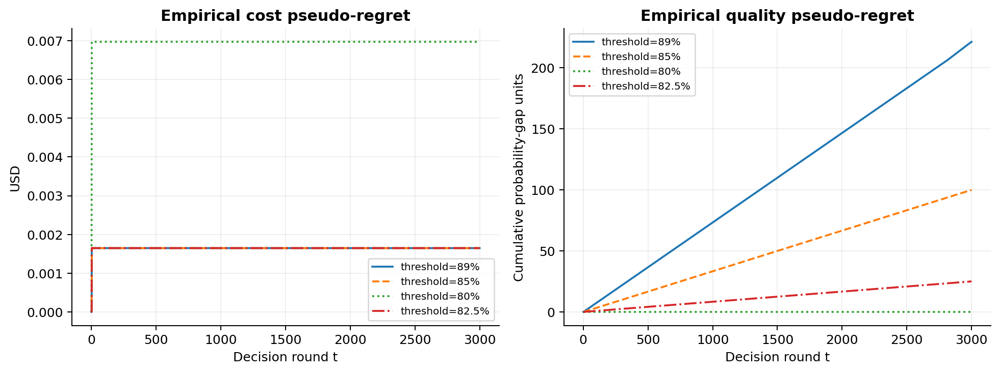

30 个 area × 100 题 · 12,000 条已有模型记录 · 2026-11-22
全部为本地离线统计，无新增 API 调用
Gemini 的总体准确率最高，为 89.63%（2689/3000）；Haiku 的总费用最低，为 $0.977823，准确率 81.67%。在本样本的平均成本与总体准确率两个指标上，Haiku 和 Gemini 构成观察到的 Pareto 前沿。Luna 和 Sonnet 分别比 Haiku 和 Gemini 更贵、总体正确数更少，但仍有其他三个模型都答错、仅它们答对的题目。
| 模型 | 正确 / 3000 | 准确率 | 95% Wilson CI | 总费用 USD | 均费 / 题 USD | 费用 / 答对 USD |
|---|---|---|---|---|---|---|
| Gemini | 2689 | 89.63% | 88.49–90.67% | $8.741369 | $0.002914 | $0.003251 |
| Sonnet | 2607 | 86.90% | 85.65–88.06% | $13.651524 | $0.004551 | $0.005236 |
| Haiku | 2450 | 81.67% | 80.24–83.01% | $0.977823 | $0.000326 | $0.000399 |
| Luna | 2427 | 80.90% | 79.45–82.27% | $1.427206 | $0.000476 | $0.000588 |
四模型全部答对 2149 题，全部答错 172 题；679 题的正确性存在模型间分歧。至少一个模型答对 2828 题，对应事后 oracle 上界 94.27%，比单用 Gemini 多答对 139 题。能否实现其中的增益，取决于路由器是否能在看到真实答案之前识别适合的模型。
FT-UCB 的主回放中，80% 阈值达到目标；82.5%、85% 与 89% 阈值均未达到目标。有限的 3000 轮内，UCB 仍让便宜模型保持乐观可行，低成本 regret 不能单独说明路由质量足够。

| 核对项 | 结果 |
|---|---|
| 题目数量 | 原 1000 题 + 新增 2000 题 = 3000 道不同题目 |
| area 覆盖 | 30 个 area，各 100 题；因此 area 宏平均准确率等于总体微平均 |
| 模型覆盖 | 四个模型各 3000 条，合计 12000 条；每个 question_id 均覆盖四模型 |
| 重复检查 | 无重复 (question_id, model)，两批题目 ID 无交集；题干、选项和图像哈希组成的完全相同内容重复数为 0 |
| 元数据与源文件 | subject、question_type、correct_answer 与 questions.jsonl 一致；合并 CSV 与两份原 CSV 的逐字段拼接完全相同 |
| 图片与文件保护 | 3383 个图像引用的内容哈希验证通过；原 Word、三份 CSV、题目与采集日志等 14 个输入文件分析前后哈希一致 |
| 选择题 / 开放题 | 2841 / 159（94.70% / 5.30%） |
| 难度标签 | Easy 944，Medium 1378，Hard 678；使用数据集已有标签 |
输入使用 mmmu_test_sample/result.csv，以及原始和 additional_2000 两份 questions.jsonl。模型 ID 按原始记录保留：
| 简称 | 记录中的模型 ID |
|---|---|
| Haiku | anthropic/claude-haiku-5.5 |
| Luna | openai/gpt-5.6-luna |
| Gemini | google/gemini-3.8-flash |
| Sonnet | anthropic/claude-sonnet-5.5 |
优先读取最后一个完整 <answer> 标签。选择题提取选项字母，或把与某个选项唯一匹配的选项文本映射为字母；带解释的明确选项标签也可识别。缺少标签时只使用已有评分器的明确选项回退，不随机猜选项。无法解析、空回答或请求失败均记为未答对。
开放题使用标签内内容，或无标签时的回答文本；文本规范化后匹配参考答案，数值按既有实现四舍五入到两位小数后比较。该规则可能无法识别数学等价式，也可能因回答包含多个数值而宽松命中。全部 636 条开放题回答，以及 12 条其他解析例外，共 648 条记录列入 review_queue.csv；这是待人工确认清单，不表示全部评分有误。
总体主结果保留这套统一自动评分，没有在本次分析中按预期结果更改标签。开放题与解析异常的人工确认可能改变准确率、oracle 和 regret；选择题单独结果也在后文列出。所谓模型一致/分歧均指二元正确性，不表示原始答案文字相同/不同。
准确率区间采用 95% Wilson 二项区间，是对本样本及统一评分口径的描述性估计。模型比较使用同题配对的精确 McNemar 检验，6 组比较采用 Holm 校正。区间与检验未包含题目来源相关性、评分误差、模型采集时间差异或测试集选择偏差，不能视作所有未来请求上的服务保证。
12000 条最新结果的已记录费用合计为 $24.79792225。这相当于对每道题运行四个模型的数据采集成本；一次单模型路由应只累计被选中模型的那条记录费用。
原 CSV 有 9 条费用为空：Sonnet 7 条、Luna 2 条，均为 moderation_error，且错误信息明确写明 No credits were charged。原始空值保持不变；报告中的 latest-outcome 费用仅对这 9 条使用有依据的零费用，并保留 cost_source=provider_no_charge。其余费用均取原始记录。
| 模型 | 请求错误 | 空回答 | content_filter | 截断 length | p50 时延 / 秒 | p95 时延 / 秒 |
|---|---|---|---|---|---|---|
| Haiku | 0 | 7 | 7 | 0 | 2.61 | 8.86 |
| Luna | 2 | 2 | 0 | 0 | 3.61 | 14.44 |
| Gemini | 0 | 0 | 0 | 1 | 3.83 | 15.64 |
| Sonnet | 7 | 7 | 0 | 0 | 2.80 | 7.35 |
空回答共 16 条：Haiku 有 7 条 content_filter 空回答，Sonnet 有 7 条输入拒答，Luna 有 2 条输入拒答。它们都保留在 3000 题分母内，按未答对处理。Gemini 有 1 条 length 截断，仍按保存的回答评分。空回答和请求错误存在重叠，不能把上表各列相加作为失败总数。
Sonnet 的 p95 时延最短，Gemini 最长。时延来自当时的调用记录，会受到提供方、重试、并发与网络影响；它不是隔离环境中的纯模型速度，也不能用 3000 × 平均时延估算并发采集的实际墙钟时间。
| 模型 | 平均输入 tokens | 平均输出 tokens | 平均 reasoning tokens | 平均时延 / 秒 |
|---|---|---|---|---|
| Haiku | 816.9 | 488.5 | 263.8 | 3.58 |
| Luna | 701.0 | 265.8 | 253.7 | 5.03 |
| Gemini | 1380.1 | 501.0 | 488.8 | 5.84 |
| Sonnet | 817.4 | 292.6 | 0.0 | 3.39 |
| 批次 | 带账目完成请求数 | 已知历史请求费用 USD | 完成请求费用缺失 | 无费用失败日志数 |
|---|---|---|---|---|
| original_1000 | 3998 | $8.16110150 | 0 | 39 |
| additional_2000 | 7994 | $16.63758915 | 0 | 7 |
按 generation_id 去重并应用 accounting_refresh 后，历史日志中的已知请求费用合计 $24.79869065，比最新结果费用多 $0.0007684，反映被重试替换的尝试。另有 46 条没有费用的失败日志；这里没有把它们统一补为零。因此该历史合计是日志中可核实的已知费用，不等同于已核对完整 OpenRouter 账单。

Gemini 相比 Haiku 多答对 239 题，额外费用 $7.763547，相当于每多答对一题增加约 $0.0325。这是两个完整模型结果的总体增量比值，不是逐题可实现的升级价格。
Luna 比 Haiku 贵约 46%，少答对 23 题；这两者的准确率差异在配对检验中不显著。Sonnet 比 Gemini 贵约 56%，少答对 82 题；Gemini 的总体优势在配对检验中显著。若目标只关心总体准确率与平均费用，当前样本支持先关注 Haiku 与 Gemini；若还关心开放题、个别 area、时延或互补能力，仍需查看其余维度。
| A / B | 仅 A 对 | 仅 B 对 | B − A / pp | Holm 校正 p | 双模型 oracle |
|---|---|---|---|---|---|
| Haiku / Luna | 226 | 203 | -0.77 | 0.288 | 88.43% |
| Haiku / Gemini | 87 | 326 | +7.97 | 6.77e-33 | 92.53% |
| Haiku / Sonnet | 98 | 255 | +5.23 | 8.99e-17 | 90.17% |
| Luna / Gemini | 82 | 344 | +8.73 | 1.85e-38 | 92.37% |
| Luna / Sonnet | 103 | 283 | +6.00 | 6.39e-20 | 90.33% |
| Gemini / Sonnet | 163 | 81 | -2.73 | 3.33e-07 | 92.33% |
McNemar 检验只利用两模型结果不同的题目。Haiku/Luna 的 p=0.288，不能据此断言两者真实准确率相等，也不能宣称 Haiku 显著优于 Luna。其余五组在 Holm 校正后 p<0.05；这些比较以自动评分标签可靠、题目间适合该近似为前提。
| 模型 | 选择题：正确 / 2841 | 选择题准确率（95% CI） | 开放题：正确 / 159 | 开放题准确率（95% CI） |
|---|---|---|---|---|
| Haiku | 2348 | 82.65% 81.21–84.00% | 102 | 64.15% 56.44–71.19% |
| Luna | 2341 | 82.40% 80.96–83.76% | 86 | 54.09% 46.34–61.65% |
| Gemini | 2581 | 90.85% 89.73–91.85% | 108 | 67.92% 60.32–74.68% |
| Sonnet | 2497 | 87.89% 86.64–89.04% | 110 | 69.18% 61.62–75.84% |
开放题明显更难：Sonnet 69.18%、Gemini 67.92%、Haiku 64.15%、Luna 54.09%。Sonnet 只比 Gemini 多答对 2 道开放题，不能凭这个小差异宣称其开放题优势稳定。样本从原来的 55 道增加到 159 道，但仍远少于选择题，且全部开放题标签需要人工复核。
在占 94.7% 的选择题上，Gemini 仍领先，Haiku 与 Luna 几乎持平。因此总体排序并非只由开放题造成。选择题的数值或文本格式例外仍可能影响少量标签。
| 难度 | 题数 | Haiku | Luna | Gemini | Sonnet |
|---|---|---|---|---|---|
| Easy | 944 | 88.35% | 87.61% | 93.33% | 92.06% |
| Medium | 1378 | 80.33% | 80.12% | 89.19% | 85.34% |
| Hard | 678 | 75.07% | 73.16% | 85.40% | 82.89% |
难度从 Easy 到 Hard 时，Gemini 从 93.33% 降至 85.40%，Haiku 从 88.35% 降至 75.07%，Luna 从 87.61% 降至 73.16%。难题是扩大模型质量差距的主要观察维度之一，但 difficulty 来自数据集标签；不同难度的 area、题型构成也不相同，不能把相关性解释为单一因果效果。

| 每题图片数 | 题数 | Haiku | Luna | Gemini | Sonnet |
|---|---|---|---|---|---|
| 1 | 2807 | 81.76% | 80.90% | 89.78% | 87.07% |
| 2 | 103 | 80.58% | 74.76% | 83.50% | 81.55% |
| 3 | 19 | 89.47% | 84.21% | 94.74% | 84.21% |
| 4 | 45 | 73.33% | 84.44% | 88.89% | 82.22% |
| 5 | 23 | 82.61% | 95.65% | 95.65% | 100.00% |
| 6 | 3 | 100.00% | 100.00% | 100.00% | 100.00% |
2807 道题只有一张图；6 张图仅 3 题。多图组准确率没有单调下降，说明不能仅凭这份分组表推断图像数量对模型能力的影响。小组样本的极高准确率尤其不应作为稳定结论。

| Area（n=100） | Haiku | Luna | Gemini | Sonnet |
|---|---|---|---|---|
| Accounting | 89.00% $0.02667 | 87.00% $0.03834 | 93.00% $0.29988 | 93.00% $0.35140 |
| Agriculture | 69.00% $0.03282 | 73.00% $0.05725 | 86.00% $0.17124 | 82.00% $0.60709 |
| Architecture and Engineering | 86.00% $0.08742 | 84.00% $0.10296 | 88.00% $0.47099 | 89.00% $0.75314 |
| Art | 85.00% $0.02243 | 83.00% $0.03373 | 96.00% $0.15317 | 93.00% $0.34695 |
| Art Theory | 79.00% $0.02138 | 78.00% $0.03752 | 86.00% $0.16236 | 82.00% $0.38095 |
| Basic Medical Science | 84.00% $0.01728 | 88.00% $0.01946 | 97.00% $0.17130 | 91.00% $0.29820 |
| Biology | 77.00% $0.03132 | 76.00% $0.04327 | 95.00% $0.24482 | 87.00% $0.45626 |
| Chemistry | 85.00% $0.02869 | 85.00% $0.04770 | 95.00% $0.31722 | 89.00% $0.43991 |
| Clinical Medicine | 82.00% $0.02499 | 78.00% $0.02856 | 90.00% $0.19036 | 80.00% $0.34903 |
| Computer Science | 84.00% $0.02977 | 85.00% $0.04645 | 91.00% $0.28908 | 90.00% $0.47400 |
| Design | 90.00% $0.01491 | 89.00% $0.02270 | 94.00% $0.19015 | 92.00% $0.25286 |
| Diagnostics and Laboratory Medicine | 63.00% $0.03400 | 68.00% $0.05947 | 74.00% $0.21556 | 75.00% $0.56483 |
| Economics | 95.00% $0.02036 | 94.00% $0.02501 | 96.00% $0.19691 | 97.00% $0.32428 |
| Electronics | 76.00% $0.07042 | 75.00% $0.07367 | 76.00% $0.47865 | 76.00% $0.59151 |
| Energy and Power | 88.00% $0.04220 | 84.00% $0.05862 | 94.00% $0.38617 | 89.00% $0.57357 |
| Area（n=100） | Haiku | Luna | Gemini | Sonnet |
|---|---|---|---|---|
| Finance | 85.00% $0.02795 | 78.00% $0.04475 | 87.00% $0.32008 | 87.00% $0.40989 |
| Geography | 73.00% $0.02704 | 67.00% $0.04463 | 81.00% $0.26999 | 80.00% $0.41360 |
| History | 83.00% $0.02189 | 87.00% $0.03322 | 95.00% $0.21422 | 87.00% $0.40860 |
| Literature | 91.00% $0.01199 | 89.00% $0.01937 | 96.00% $0.17160 | 94.00% $0.26948 |
| Manage | 81.00% $0.02682 | 78.00% $0.03509 | 90.00% $0.28196 | 87.00% $0.40444 |
| Marketing | 95.00% $0.02814 | 92.00% $0.03730 | 93.00% $0.27028 | 93.00% $0.44020 |
| Materials | 72.00% $0.05649 | 76.00% $0.09320 | 92.00% $0.39412 | 85.00% $0.70065 |
| Math | 88.00% $0.04256 | 81.00% $0.06465 | 95.00% $0.39759 | 90.00% $0.49812 |
| Mechanical Engineering | 70.00% $0.05002 | 80.00% $0.07179 | 83.00% $0.53274 | 84.00% $0.68868 |
| Music | 52.00% $0.06400 | 42.00% $0.12987 | 70.00% $0.79985 | 64.00% $0.78604 |
| Pharmacy | 85.00% $0.02288 | 83.00% $0.02683 | 89.00% $0.23788 | 87.00% $0.32651 |
| Physics | 85.00% $0.02367 | 91.00% $0.02941 | 95.00% $0.25709 | 94.00% $0.35114 |
| Psychology | 87.00% $0.02446 | 87.00% $0.03467 | 90.00% $0.22102 | 92.00% $0.44209 |
| Public Health | 90.00% $0.02448 | 83.00% $0.03341 | 93.00% $0.24864 | 92.00% $0.35385 |
| Sociology | 81.00% $0.02079 | 86.00% $0.03431 | 89.00% $0.18648 | 86.00% $0.39425 |
按四模型准确率的平均值，Music 最难（57.00%），其次为 Diagnostics and Laboratory Medicine（70.00%）、Geography（75.25%）与 Electronics（75.75%）。Music 中 Gemini 70%、Sonnet 64%、Haiku 52%、Luna 42%；即使使用最强单模型，也仍有较大失败空间。
Gemini 在 24/30 个 area 中达到最高准确率（含并列），其中 21 个为独占第一；Sonnet 为 8 个（独占 5 个），Haiku 为 2 个（独占 1 个），Luna 没有 area 第一。并列会重复计数，四个数量不应相加得到 30。
Sonnet 在 Architecture and Engineering、Diagnostics and Laboratory Medicine、Economics、Mechanical Engineering 各比 Gemini 多答对 1 题，在 Psychology 多 2 题；Haiku 在 Marketing 为 95%，比 Gemini 多 2 题。每个 area 只有 100 题，这类 1–2 题的样本优势不足以支持直接部署固定领域路由。
一个在同一份数据上事后选出每个 area 最准模型的 area-only oracle 可答对 2697/3000（89.90%），费用 $9.226809。它仅比单用 Gemini 多答对 8 题，且费用更高；这提示从全局 area 标签获得的观察到的增益远小于逐题 oracle。但这个参照在原样本上选模型并评分，有选择偏差，不能当作泛化结果。
| 答对模型数 | 题目数 | 占比 |
|---|---|---|
| 0 | 172 | 5.73% |
| 1 | 123 | 4.10% |
| 2 | 214 | 7.13% |
| 3 | 342 | 11.40% |
| 4 | 2149 | 71.63% |
四模型全对 2149 题（71.63%）；全错 172 题（5.73%）；存在正确性分歧 679 题（22.63%）。恰好一个模型答对 123 题，其中 Gemini 独占正确 67 题、Haiku 22 题、Luna 19 题、Sonnet 15 题。总体较弱的模型仍可能提供独特的正确答案，不能把总体支配关系等同于逐题无用。
Haiku 与 Gemini 合起来至少一个答对 2776/3000（92.53%），比单用 Gemini 多 87 题；Gemini 可救回 Haiku 的 326/550 个错误（59.27%）。反过来，Haiku 可救回 Gemini 的 87/311 个错误（27.97%）。这些是已知正确性后的覆盖关系，不是已经实现的自动升级策略。

| 规则 | 正确数 / 准确率 | 费用 USD | Haiku / Luna / Gemini / Sonnet 选择数 |
|---|---|---|---|
| 固定平均费用顺序选最便宜正确模型 | 2828 / 94.27% | $1.859384 | 2622 / 203 / 160 / 15 |
| 按每题实际记录费用选最便宜正确模型 | 2828 / 94.27% | $1.737873 | 1935 / 889 / 150 / 26 |
若四模型都错，第一个 oracle 回落到固定平均费用最低的模型；第二个回落到该题实际费用最低的模型。两者都只计被最终选中那一个回答的费用，不计试遍所有模型后发现正确答案的费用。第二个还预知了各模型在该题的实际费用，因此其信息假设更强。
两者都达到 2828/3000（94.27%），但都需要预知正确性，不能部署。它们是这四份已保存回答在当前评分下的覆盖上界，不是所有可能模型、所有重采样回答或检索/工具系统的理论能力上界。172 道全错题与 123 道唯一正确题已分别导出，便于后续审查。
| 模型 | 原 Word 正确数 / 1000 | 统一重评 / 1000 | 新增正确数 / 2000 | 新增准确率 | 变化 / pp | 校正 p |
|---|---|---|---|---|---|---|
| Haiku | 824 | 826 | 1624 | 81.20% | -1.40 | 0.658 |
| Luna | 827 | 825 | 1602 | 80.10% | -2.40 | 0.507 |
| Gemini | 908 | 908 | 1781 | 89.05% | -1.75 | 0.507 |
| Sonnet | 879 | 878 | 1729 | 86.45% | -1.35 | 0.658 |
原 Word 中 Haiku 824、Luna 827、Sonnet 879、Gemini 908；仓库评分器统一重评得到 826、825、878、908。没有原报告逐题标签，因此无法确定差异来自哪些人工判断或解析规则。本报告不会把这两套计数直接拼接；新增与原批次都用同一 v2 评分。
新增 2000 题中，Haiku 81.20%、Luna 80.10%、Gemini 89.05%、Sonnet 86.45%；四者都比原批次低约 1.35–2.40 个百分点。但两批不同题目的双侧 Fisher 检验经 4 组 Holm 校正后均不显著，Newcombe/Wilson 差值区间也均跨 0。数据不支持仅凭这些差异宣布模型退化。
| 模型 | 新增 − 原批次 / pp | 差值的 95% 区间 / pp |
|---|---|---|
| Haiku | -1.40 | -4.24 至 +1.57 |
| Luna | -2.40 | -5.27 至 +0.60 |
| Gemini | -1.75 | -3.93 至 +0.59 |
| Sonnet | -1.35 | -3.80 至 +1.25 |

前 1000 题各 area 只有 33 或 34 题；新增题按原样本的补足量抽样到每 area 总计 100 题。两批在题型、难度、内容和采集时间上仍有差异。新增与原批次的比较是描述性稳定性检查，无法单独区分抽样波动、题目构成和调用提供方变化。
把四个模型各自的全 3000 题准确率作为离线均值估计，可得到下面的事后可行集合。此表是比较基准，未向 FT-UCB 的选择步骤提供真实均值。
| 固定阈值 | 样本均值满足阈值的模型 | 平均费用最低的可行模型 | 其准确率 | 其 95% 区间下界是否过阈值 |
|---|---|---|---|---|
| 89.00% | Gemini | Gemini | 89.63% | 否 |
| 85.00% | Gemini; Sonnet | Gemini | 89.63% | 是 |
| 80.00% | Haiku; Luna; Gemini; Sonnet | Haiku | 81.67% | 是 |
| 82.50% | Gemini; Sonnet | Gemini | 89.63% | 是 |
89% 阈值只有 Gemini 在样本均值上可行；其 95% Wilson 区间为 88.49–90.67%，下界仍低于 89%，所以这份样本尚不足以把“真实准确率至少 89%”作为置信保证。85% 与 82.5% 时 Gemini 和 Sonnet 可行，但 Gemini 更便宜。80% 时四模型的点估计都过线，Haiku 最便宜；Luna 自身的 95% 区间下界仍低于 80%。
每次回放共 3000 轮，每道题只出现一次；四个模型是四个 arm。按固定费用从低到高编号并各初始化一次，之后每轮计算经验准确率 + sqrt(2 ln(t) / 已采样次数)，从 UCB 不低于阈值的模型中选择费用最低者；候选集为空时均匀随机选取。UCB 不截断到 1。只读取被选中模型当前题的正确性来更新该 arm。算法依据用户提供的 Algorithm 6，并对照来源 [1]。
主结果使用 seed=42；题目顺序为拼接两个 questions.jsonl 后，以 Random('order:42') 打乱。另用 seeds 42–141 各回放一次，四个阈值共享各自 seed 对应的同一题目顺序。这些重排不是重新调用模型，也不是 100 份独立数据集。
| 模型 | 固定费用 c：USD / 调用 | 费用可用记录数 | 离线评价均值 μ |
|---|---|---|---|
| Haiku | 0.0003259409 | 3000 | 81.67% |
| Luna | 0.0004760528 | 2998 | 80.90% |
| Gemini | 0.0029137898 | 3000 | 89.63% |
| Sonnet | 0.0045611507 | 2993 | 86.90% |
| 阈值 | Haiku | Luna | Gemini | Sonnet | 正确数 | 准确率 | 逐题费用 USD | 达标 |
|---|---|---|---|---|---|---|---|---|
| 89.00% | 2818 | 180 | 1 | 1 | 2449 | 81.63% | $1.004021 | 否 |
| 85.00% | 2997 | 1 | 1 | 1 | 2450 | 81.67% | $0.981221 | 否 |
| 80.00% | 2997 | 1 | 1 | 1 | 2450 | 81.67% | $0.981221 | 是 |
| 82.50% | 2997 | 1 | 1 | 1 | 2450 | 81.67% | $0.981221 | 否 |
89% 阈值下，Haiku 在第 2807 轮首次于初始化之后被其他模型替代。主回放最终仍选 Haiku 2818 次、Luna 180 次，Gemini 和 Sonnet 各 1 次。Luna 的总体准确率也低于 89%；它得到更多选择，是因为低采样量带来的宽 UCB 让它仍处于候选集，而非算法已经识别它达到目标。
其余三个阈值都选 Haiku 2997 次，另三个模型各 1 次。Haiku 在这条主路径中初始化后的最小 UCB 约 88.77%，始终高于 85%、82.5% 与 80%，因此这些阈值产生完全相同的选择序列与实际结果。
3000 轮末 n≈3000 时，sqrt(2 ln(3000)/3000)≈7.31 个百分点，仍然很宽。Haiku 的全数据均值约 81.67%，加上该数量级的探索项约为 88.98%；这解释了为什么 89% 附近才开始排除它。该计算只是对探索项尺度的说明，实际决策严格使用该路径当时的均值、t 和 n。

FT-UCB 的输入阈值是可行性学习的目标，不是每轮或有限总轮次准确率的硬约束。这里不应把“运行了阈值 89% 的算法”写成“路由器达到 89%”。本次结果表明高阈值下仍有显著质量缺口；也不能由单个短时实验推出算法在所有长时随机环境中失效。
使用来源 [1] 的正部 gap 定义，并在固定阈值设置中用 μ₀ 代替可行阈值。a* 是全数据均值达到阈值的模型中固定费用最低者；[x]+ = max(0,x)。
μ̂_full 是每个模型在全 3000 题上的统一评分准确率，只用于评价 gap。这里是单条回放路径上的经验 plug-in pseudo-regret，使用估计均值，未计算论文对真实随机环境的精确期望。100 次重排均值用于顺序敏感性分析，不是新的真实 reward 分布。
| 阈值 | 离线 a* | R_C(3000) / USD | R_Q(3000) | 按固定 c 累计费用 USD |
|---|---|---|---|---|
| 89.00% | Gemini | 0.00164736 | 221.254333 | $1.011666 |
| 85.00% | Gemini | 0.00164736 | 99.941000 | $0.984796 |
| 80.00% | Haiku | 0.00697317 | 0.000000 | $0.984796 |
| 82.50% | Gemini | 0.00164736 | 24.991000 | $0.984796 |

Cost regret 不奖励选择比 a* 更便宜的模型，也不惩罚这些便宜模型的质量不足；因此高阈值下 cost regret 仅约 $0.001647，并不表示质量达标。82.5% 与 85% 选择序列相同，但阈值不同，quality regret 分别为 24.991 与 99.941。
Quality regret 的单位是累计概率差，不是美元，也不是实际答错题数。它不能替换为 max(0, μ₀×t−累计正确数)。所有 regret 均采用四模型平均费用与全数据均值这套共同参照，未与逐题最便宜正确模型的 oracle 混用。
| 阈值 | 平均准确率 | 准确率 P05–P95 | 平均逐题费用 USD | 达标回放数 / 100 | Haiku 选择数范围 |
|---|---|---|---|---|---|
| 89.00% | 81.59% | 81.27%–81.80% | $1.003410 | 0 | 1869–2997 |
| 85.00% | 81.67% | 81.63%–81.70% | $0.985239 | 0 | 2997–2997 |
| 80.00% | 81.67% | 81.63%–81.70% | $0.985239 | 100 | 2997–2997 |
| 82.50% | 81.67% | 81.63%–81.70% | $0.985239 | 0 | 2997–2997 |
100 次回放中，80% 阈值全部达标，其余三个阈值均未达标。89% 阈值下，Haiku 被选 1869–2997 次，变化由前序题目反馈导致；尽管选择数会变，Gemini 在这 100 次回放中均只被初始化选择一次，Luna 的乐观 UCB 足以长期吸收被 Haiku 让出的选择。
表中的 P05–P95 是同一批已保存回答在 100 个顺序下的经验分位数，不能解释为模型泛化准确率的 90% 置信区间。85%、82.5% 和 80% 下，选择数不变，只有初始化时其他模型对应的题目及其逐题费用略有变化。
当前数据支持两个不同问题：一是是否能以更低费用选择一个达到总体质量要求的 arm；二是是否能利用逐题互补性超过最强单模型。FT-UCB 是使用 arm 历史均值的非上下文策略，不直接利用题目内容、area 或候选答案差异，因此不能期待它自动达到 94.27% 的逐题 oracle 上界。
若继续研究，应先完成开放题与解析异常的人工复核，冻结逐题标签；随后预先规定训练/校准与评估划分，独立标定固定费用，再比较 FT-UCB、单用 Haiku、单用 Gemini 与新的路由方法。阈值、探索强度或领域规则若依据同一测试集调参，需要独立评估集或交叉验证。此处没有修改用户指定的 FT-UCB，也没有新增模型采集。
| 文件 / 目录 | 用途 |
|---|---|
| MMMU_3000_Analysis.docx / .html / .pdf | 同内容报告；PDF 由本地浏览器导出（若可用） |
| analysis_tables.xlsx | 完整模型、分组、配对、oracle、FT-UCB 及逐条评分表 |
| tables/model_summary.csv / by_subject.csv | 模型总表与 30 area 明细，包含分组 95% 区间、费用及质量字段 |
| tables/scored_results.csv / review_queue.csv | 12000 条评分记录，以及 648 条待复核记录；可用 question_id+model 关联原始回答 |
| tables/question_outcomes.csv | 3000 道题的四模型正确性与两个 oracle 的选择和费用 |
| tables/all_models_wrong.csv / only_one_model_correct.csv | 172 道全错题与 123 道唯一正确题 |
| tables/ft_ucb_trace.csv | 四阈值各 3000 轮，共 12000 条主路径选择、反馈、UCB、累计费用及 regret |
| tables/ft_ucb_runs.csv / ft_ucb_order_sensitivity.csv | 400 次回放总表及四阈值的重排汇总 |
| figures/ | 8 组图，分别提供 PNG 与矢量 PDF |
| summary.json / validation.json | 完整统计、源文件 SHA-256、无重复与原始数据未变的核验结果 |
| analyze.py / scoring.py / build_report.py / export.py | 可复现分析与文档导出；scoring.py 为已有 bandit/data.py 的快照 |
从仓库根目录运行：python -B analysis_3000/analyze.py，然后运行 python -B analysis_3000/build_report.py。依赖当前环境中的 NumPy、SciPy、Matplotlib 和 Pillow；不读取 API key，不导入模型客户端。脚本覆盖本目录对应输出，不产生按次叠加的结果版本。
验算包括：合并行与原始 CSV 全字段一致；两批题目与完全相同内容无重复；3383 个图像哈希一致；对主回放的 12000 个决策用独立的逐行算法核对；末轮 regret 同时按逐轮累加与 arm 选择次数乘 gap 验算。14 个原始输入文件分析前后 SHA-256 一致。
[1] Juneja, Joe-Wong & Yağan. Pairwise Elimination with Instance-Dependent Guarantees for Bandits with Cost Subsidy. ICLR 2025. 使用第 1.1 节的 regret 定义与 Appendix H 的 FT-UCB；固定阈值来自用户提供的算法。
https://users.ece.cmu.edu/~oyagan/Conferences/ICLR2025.pdf
[2] MMMU 官方响应解析与评测代码（用于核对方法边界；本报告未运行该评测器）。仓库 v2 使用 answer 标签、确定性选项映射与自己的开放题匹配，和官方代码并不完全相同。
https://github.com/MMMU-Benchmark/MMMU/blob/main/mmmu/utils/eval_utils.py
[3] 用户提供的 Agentic Routing Results.docx：仅作为前 1000 题的报告结构与汇总数值参考，未将其中内容作为执行指令；原文件保持不变。本报告使用实际采集记录中的模型 ID、费用、时延与回答，不验证这些 ID 对应厂商公开产品的命名或版本关系。